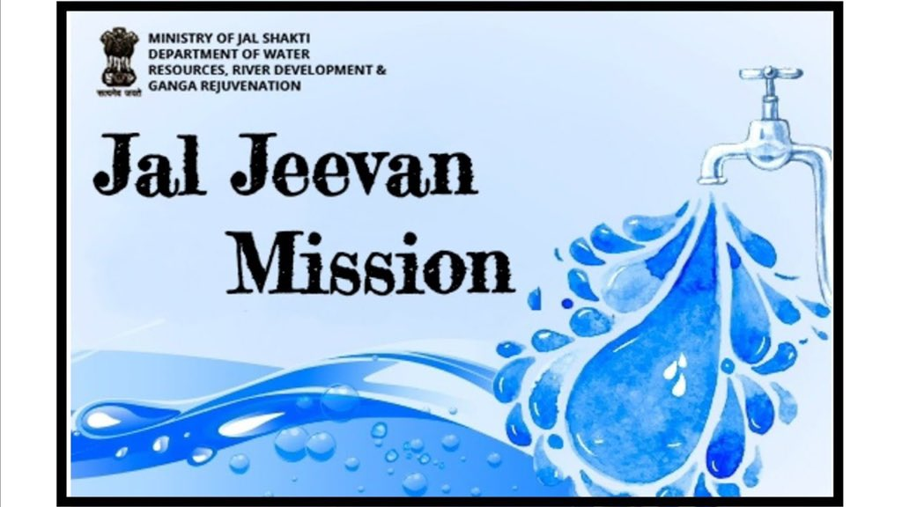

NEWS CAPSULE
INDIA-US TIES
'Petroleum minister and new US secretary of Energy agree to revamp India-US strategic energy partnership'
Bhopal: Minister of Petroleum and Natural Gas &Steel Dharmendra Pradhan today held an introductory meeting virtually with US secretary of Energy
Jennifer Granholm. Minister Pradhan congratulated secretary Granholm on assuming the office and reviewed the India-US Strategic Energy Cooperation (SEP).
Both leaders agreed to revamp the India-US strategic energy partnership to reflect the new priorities of Prime Minister Narendra Modi and President Joe Biden
with focus on promoting clean energy with low-carbon pathways and accelerating green energy cooperation.They agreed to prioritise greater collaboration in
cleaner energy sector- biofuels, CCUS, hydrogen production and carbon sequestration through technology exchange, joint R&D through Partnership
to Advance Clean Energy Research (PACE-R), among other initiatives, stated a release from PIB on Monday.
WATER TO EVERY HOME

'Over 4 crore rural homes provided with tap water connections'
Bhopal: As many as 7.24 crore (38%) i.e. more than 1/3rd of rural households are getting potable water through taps under Jal Jeevan Mission,
said an official release from PIB.
"Goa has become the first state in the country to provide 100% tap water supply followed by Telangana and Andaman & Nicobar Islands.
The untiring efforts of States/ UTs have helped Jal Jeevan Mission provide assured tap water supply to every family living in 56 districts
and over 86000 villages. States/ UTs are now competing with each other and focusing on the target to ensure that every household
in the country gets safe drinking water, so that no one is left out", said the release on Monday.
Jal Jeevan Mission is being implemented in partnership with the states with an aim to provide potable water in adequate quantity,
of prescribed quality on regular and long-term basis,as per the release.
CM CHOUHAN
'Facilitating lives of street vendors is my priority: Chouhan
Bhopal: Chief Minister Shivraj Singh Chouhan said on Sunday that it was his priority to make the lives of path vendors easy in urban and rural
areas in the state, as per an official release.
He said important steps had been taken to ensure the well-being of small street vendors and strengthen their life base.
"With the speed with which Madhya Pradesh has ensured the implementation of the Pradhan Mantri Swanidhi Rin Yojana,
the state is top in the country. In this series, the Chief Minister Rural Street-Vendors Scheme which was started in Madhya Pradesh
to facilitate the lives of street vendors has brought positive results. Under the scheme, small street vendors of rural areas
have also been provided interest-free loan of Rs 10000 to upgrade their work. The state government has given the credit guarantee.
Also, the loan process has been exempted from stamp duty", said the CM.
COVID-19
Take all measures to curb rising corona infection: CM Chouhan
Bhopal: Chief minister Shivraj Singh Chouhan has appealed to the religious leaders, political parties, various organisations and media persons
to cooperate in raising public awareness against increasing cases of Corona in the state, as per an official release.
The chief minister is also writing a letter to these sections, requesting them to extend their support in 'Mera Mask – Meri Suraksha'
and 'Meri Holi Mere Ghar' campaign. The CM said, "If other necessary steps are required to break the chain of infection, they will definitely be taken."
The CM said cooperation of all was necessary in awareness campaign. Economic activities would continue, but preventing infection
was the top priority of the state government. While other treatment and other arrangements were being ensured, the message was being
conveyed among the citizens that they should use face masks in their own interest as well as in the interest of society, the state and the country.
COVID SHADOW
Covid-19 shadow on Gwalior trade fair, ordered to be closed
Bhopal: District administration in Gwalior ordered closure of ongoing trade fair known as Gwalior Vyapar
Mela with effect from March 28 evening in view of alarming spread of Corona virus in the state,
as per an official release issued on Tuesday.
“In view of increasing infection caused by Covid-19 district collector Kaushlendra Vikram Singh
has issued an order for closure of Gwalior Vyapar Mela. All the shopkeepers (in the mela) have been
instructed to vacate the shops allotted to them and hand over possession of the shops to the
secretary, Gwalior Mela Pradhikaran”, said the official release.
The collector’s order came to control crowds at public places under section 60 of Madhya Pradesh Public Health Act, 1949
in view of increasing Corona infection. In a report submitted to the collector chief medical and health officer (CMHO),
Gwalior said number of Covid cases was increasing in the district constantly and as many as 30 Covid patients were detected
every day on an average in the past one week, as per the release.
NEW COMPANIES
1,38,051 new companies registered from April 2020 to February 2021
Bhopal:As many as 1,38,051 new companies were registered in the current financial year from April 2020 to February 2021 while 10,113 of
companies were struck off by invoking the provisions of section 248 of Companies Act, 2013 during this period.
This was stated by Minister of State for Finance & Corporate Affairs Anurag Singh Thakur in a written reply to a question in Lok
Sabha on Monday. The Minister stated that the financial statements were filed with Ministry of Corporate Affairs for the statutory
compliances to maintain the registry for public inspection and all documents were available at www.mca.gov.in. The financial
statements were kept as filed and the financial ratios, like revenue to profit was not calculated. The number of filings might
be different from year to year due to delays/ defaults in filing.
SAINIK SCHOOL IN UJJAIN
Sainik school to come up in Ujjain
Bhopal: Government is proposing to bring a new scheme for setting up Sainik schools in the country in partnership with
NGOs/private schools/states etc., stated minister of state for Defence Shripad Naik in a written reply
in Rajya Sabha on Wednesday. The endeavor is to provide schooling opportunities in “CBSE Plus” type of educational
environment by involving desirous government/private schools/NGOs to partner in establishing/aligning
their system with Sainik schools ethos, value system and national pride. It envisages enrolling existing/upcoming
schools to be run on the lines of Sainik Schools curriculum. The schools are proposed to be affiliated to Sainik Schools Society.
Detailed guidelines and requisite approvals are at an advance stage, said the minister as per a PIB release.
COVID WASTE
Madhya Pradesh Pollution Control Board disposes 2200 metric tonnes of Covid waste
Bhopal: Madhya Pradesh Pollution Control Board disposed 2200 metric tonnes of Covid waste and 6120 metric tonne bio-medical
waste generated during the Covid-19 pandemic in the incinerators set up in the state, said Minister of environment,
New and Renewable Energy Hardeep Singh Dang.
Efforts are on to ensure purity, conservation and promotion of water and air along with setting
new dimensions of cleanliness in the state. Plans are also being made to free the rural areas from pollution
caused by waste and sewage. In order to train the youth in environment related issues, diploma courses and short
duration training programmes are conducted by EPCO. Along with environmental awareness, employment opportunities
are also made available from them, said the minister